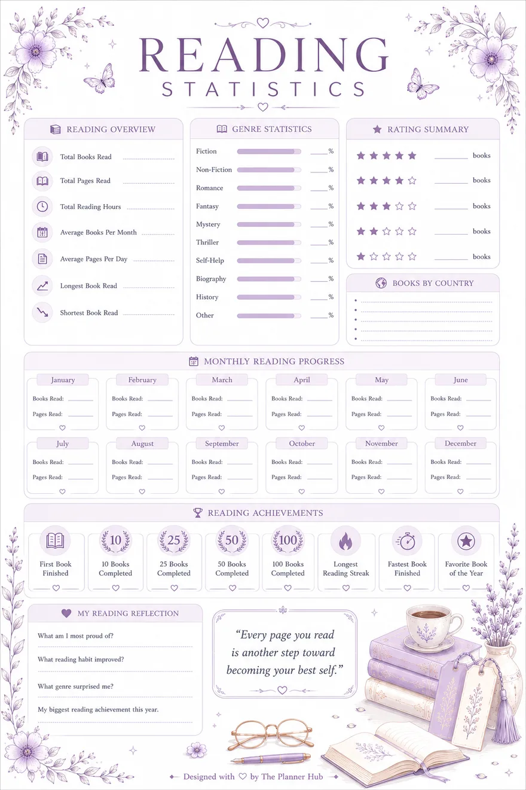

- Book: The Quiet Lighthouse (example)
- Author: Amara Voss (example)
- Started: March 2 | Finished: March 9
- Star rating: ★★★★☆ (4/5)
- One-line summary: A lighthouse keeper's daughter uncovers old family letters that change how she sees her mother.
- Favorite quote: "Some doors open quietly, so you almost miss the moment they change everything."
- My thoughts: This book was slow at first, but the second half pulled me in completely. I loved how the letters were used to reveal the past bit by bit. It made me think about my own family stories.
What Is a Reading Journal? (Complete Guide + Examples)

A reading journal is a notebook (paper or digital) where you write down what you read: book titles, dates, ratings, favorite quotes, and your own thoughts about the story. It helps you remember books better, read more mindfully, and track your reading progress over time.
If you've ever finished a book and forgotten the plot a month later, a reading journal fixes that. It's simple, it takes just a few minutes per book, and anyone can start one. No special skills are needed.
What Is a Reading Journal? (Simple Definition)
A reading journal is a place to record your reading life. Instead of just reading a book and moving on, you pause and write a few notes: what happened, how you felt, what you liked, and whether you'd recommend it.
Some people use a plain notebook. Others use a printed template with ready-made sections. Many readers now use a digital reading journal, a fillable PDF or app page they can type into on their phone or laptop.
Whatever the format, the goal is the same: to turn reading into something you remember and enjoy more.
Reading Journal vs Book Journal vs Book Journaling: Are They the Same?
Yes, mostly. These terms are used interchangeably:
- Reading journal: the most common name for this notebook.
- Book journal: same thing, just a different word choice.
- Book journaling: the activity of keeping a book journal (the verb form).
So if you search "what is a book journal" or "what is book journaling," you're really asking about the same idea as a reading journal. Some readers also use the term "reading log." A reading log usually focuses only on tracking titles and dates, while a full reading journal also includes reflections and quotes.
Why Keep a Reading Journal? (Benefits)
A reading journal isn't just for looks. It actually changes how you read:
- You remember books longer. Writing a short summary right after finishing helps the story stick in your memory.
- You read more mindfully. Knowing you'll write about the book makes you pay closer attention while reading it.
- You track your reading habit. Seeing a growing list of finished books is motivating, especially during a reading challenge.
- You build a personal library of thoughts. Years later, you can look back and see exactly what you thought of a book, not just that you read it.
- You discover your own reading taste. Patterns show up over time: favorite genres, authors you keep returning to, and books that really moved you.
What Goes Inside a Reading Journal? (Examples)
A reading journal can be as simple or detailed as you like. Common sections include:
- Book log: title, author, start date, finish date.
- Star rating: a quick 1-to-5 score for each book.
- Favorite quotes: lines you don't want to forget.
- Short review: 2-3 sentences on what you thought.
- TBR list ("to be read"): books you want to read next.
- Reading challenge tracker: a checklist for a yearly reading goal.
- Genre tracker: a chart showing which genres you read most.
- Favorite characters or authors: a page to note the ones you love.
You don't need all of these. Many readers start with just a book log and a rating, then add more sections later as the habit sticks.

Sample Entry (Example)
Here is what a real entry might look like once it's filled in:
This is just one way to fill an entry. Your own notes can be shorter, longer, or in a different order. What matters is that it's honest and easy to write.
How to Start a Reading Journal (Step-by-Step)
Starting a reading journal is easier than it sounds. Here's a simple way to begin:
- Pick your format. Choose a plain notebook, a printable template, or a fillable digital PDF you can type on directly.
- Set up one simple page per book. Keep it short at first: title, author, dates, and a rating are enough.
- Read as normal. You don't need to take notes while reading unless you want to.
- Write your entry right after finishing. Do it the same day if possible, while the book is still fresh in your mind.
- Add one quote you loved. This makes your journal more personal and fun to reread later.
- Review your journal monthly. Flip back through it to see what you've read and enjoyed.
- Stay consistent, not perfect. A short two-line entry every time beats a long entry you only write occasionally.
Common Mistakes to Avoid
A few small habits can make journaling harder than it needs to be. Watch out for these:
- Waiting too long to write the entry. If you wait weeks, you'll forget the small details that make an entry worth reading later.
- Trying to write a full essay every time. A journal entry is not a book report. Two or three honest sentences are enough.
- Skipping books you didn't finish. DNF (did not finish) books are still worth a short note. It helps you learn what you don't enjoy.
- Using a format that feels like a chore. If a template has too many sections, you may stop using it. Start simple and add more only if you want to.
- Comparing your journal to someone else's. Some people write long reflections, others write two lines. Both are valid.
Reading Journal Ideas (Simple Prompts You Can Use)
If you're not sure what to write, try these reading journal ideas for each entry:
- What was this book about, in one sentence?
- What's one thing I'll remember about this book a year from now?
- Did this book remind me of anything in my own life?
- Who would I recommend this book to?
- What's one quote or line I want to save?
- How did this book make me feel while reading it?
You don't need to answer every prompt for every book. Pick one or two that fit the story.
Digital vs Printable Reading Journal: Which Is Better?
Both work well. The better choice depends on your habits.
- Printable reading journal: good if you enjoy handwriting and want a physical book to flip through. No screen needed.
- Digital or fillable reading journal: good if you read on your phone, want to type instead of write, and want your journal always with you without carrying a notebook.
If you're not sure which you'll stick with, try a digital one first. It's easy to start, easy to edit, and you can always print it later if you decide you prefer paper.
FAQ
Is a reading journal the same as a diary?
Not quite. A diary is about your daily life in general, while a reading journal focuses only on the books you read: titles, thoughts, quotes, and ratings.
Do I need to write a full review for every book?
No. Even 2-3 sentences per book is enough. The goal is consistency, not long essays.
What's the difference between a reading journal and a reading log?
A reading log usually just tracks titles and dates. A reading journal goes further, adding your thoughts, ratings, and favorite quotes.
Can I start a reading journal in the middle of the year?
Yes, any time is a good time. Just start with the next book you finish. You don't need to go back and log every past book.
Is a printable or digital reading journal better for beginners?
Both work well. A fillable digital reading journal is often easier to start with since you can type directly on your phone or laptop without buying anything.
Start Your Own Reading Journal Today
A reading journal doesn't need to be complicated. It's just a few honest notes after each book, kept in one place. Over time, it becomes something you'll enjoy looking back on.
If you'd like a ready-made template, try our Book Reading Journal. It already has the log, ratings, quotes, and TBR sections built in, so you can start writing today instead of designing pages from scratch.
Get the Book Reading JournalNot sure how long your next book will take to read? Try our reading pace calculator to plan your reading sessions and set a realistic finish date.